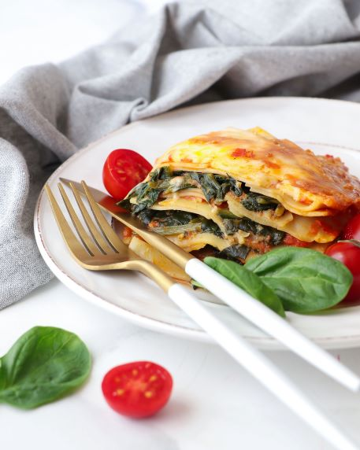

Lasagna Recipe

Homemade lasagna isn't as hard to make as it seems.
Don't be intimidated by all the layers of delicious Italian flavor — try this homemade lasagna recipe today!
Ingredients
These are the ingredients you'll need to make this top-rated homemade lasagna recipe:
Meat:This lasagna recipe starts with a pound of ground meat (½ pound ground pork, ½ pound lean ground beef).
Onion: A diced onion is cooked until translucent with the ground meat
Canned tomatoes:You'll need a can of tomato sauce and a can of crushed tomatoes.
Fresh herbs:For fresh flavor, chop two tablespoons of parsley and crush one clove of garlic
Sugar:A dash of sugar balances out all of the acidity from the tomatoes.
Spices and Seasonings:This homemade lasagna is seasoned with dried basil, dried oregano, salt, and black pepper.
Noodles:Of course, you'll need lasagna noodles! This recipe calls for uncooked noodles, but you can use the oven-ready variety to save time.
Cheese:The cheese layer is made up of cottage cheese and Parmesan. You'll also need shredded mozzarella.
Eggs:Eggs make the cheese layer extra creamy. Plus, they act as a binding agent (which means they hold the layer together).
Steps to follow:
Cook the meat: Cook the ground meat in a skillet until browned and crumbly.
Add the onion and continue cooking until it's translucent. Stir in the canned tomato products, half of the parsley, garlic, basil, 1.5 teaspoons of salt, oregano, and sugar.
Cook the noodles: Boil the lasagna noodles in lightly salted water until they're al dente.
Make the cheese layer: Mix cottage cheese, Parmesan cheese, eggs, the remaining parsley, the remaining salt, and pepper in a bowl.
Assemble the lasagna: Layer the ingredients according to the recipe (starting with sauce and ending with mozzarella) until the lasagna is assembled.
Bake the lasagna: Cover with foil and bake in the preheated oven for about half an hour. Remove the foil and continue baking until the top is golden brown.
How Long to Cook Lasagna
In an oven preheated to 375 degrees F, this homemade lasagna should be perfectly baked in about 50 minutes (30-40 minutes covered, 5-10 minutes uncovered).